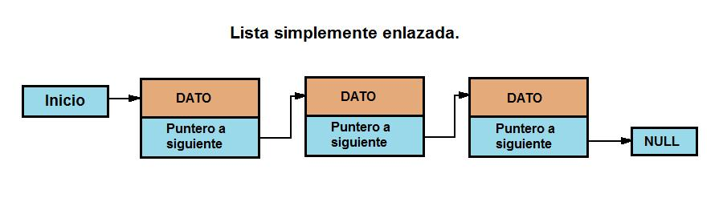

Los nuevos tiempos han traido consigo muchos cambios, en los cuales se incluye crear opciones virtuales o digitales para que todo sea de una manera mas dinamica.
Estas opciones incluyen crear recursos digitales que sean llamativos e interactivos, utilizando todas las hermmanentas que el lenguaje HTML nos permite crear. Algunas de estas y que son muy efectivas son: flex box, listas y enlaces.
Dichas herramientas nos permiten crear entornos y diseños que son interactivos, nos permiten hacer conexiones y crear espacios organizados que permitan acceder a la informacion de manera adecuada y organizada. Aqui mostraremos las principales caracteristicas, usos y funcionamiento de cada uno de los elementos que fueron nombrados anteriormente.
Flex box.
En español caja flexible, es un diseño de unidimensional de layout que ayuda a distribuir espacios de los ítems en una interfaz de este modo todo se encuentra más alineado.
Se habla de unidimensional ya que solo controla una dimensión a la vez, sea columna o fila.
La flex box posee dos ejes, el eje principal y el eje cruzado, usualmente definido así:
Eje principal se define por flex-direction y posee cuatro (posibles) valores: row, row-reverse, column, column-reverse.
Teniendo en cuenta las dos primeras el eje principal ira a lo largo de la fila según la dirección de línea, por el contrario, si se tiene en cuenta las últimas dos, ira desde el borde superior hasta el final de la página siguiendo la dirección del bloque.
Eje cruzado, este es perpendicular al eje principal así que si el eje principal es row el eje ira por las columnas y si es column ira cruzado por las filas.
Mdn web_docs. Conceptos básicos de flexbox. 2022. Recuperado de: https://developer.mozilla.org/es/docs/Web/CSS/CSS_Flexible_Box_Layout/Basic_Concepts_of_Flexbox
Listas
Es una estructura de datos que esta presentada con dinamismo, los elementos son del mismo tipo así se establece un orden entre ellos. Un ejemplo de ellas son las pilas y colas.
Encontramos varios tipos de listas:
- Simplemente enlazadas: cada nodo tiene un campo que apunta al otro nodo.

- Doblemente enlazadas: cada nodo tiene uno que apunta al nodo siguiente y otro apuntando al nodo anterior.
- Lineales: cuentan con un comienzo y un final.
- Circulares: el ultimo elemento apunta al primero, no tienen un final.
Las operaciones básicas que se usan en las listas son: crear, insertar, eliminar y vacía
Juntadeandalucia. Repositorio. Listas 2022. Recuperado de: http://agrega.juntadeandalucia.es/repositorio/02122016/a5/es-an_2016120212_9131705/33_listas.html
Enlaces
Su principal función es conectar una idea con otra y esto puede darse de diferentes maneras, como lo son imágenes, palabras, hipertexto, una línea de programación, una dirección web o una referencia directa (te redirige a un sitio diferente con información relacionada). Se pueden como atajo que relación un contenido con otro, pueden ser conocidos como vínculos (en inglés links) y pueden estar señaladas directamente u ocultas en imágenes o videos.
SISTEMAS. Definición de enlace. 2016. Recuperado de: https://sistemas.com/enlace.php